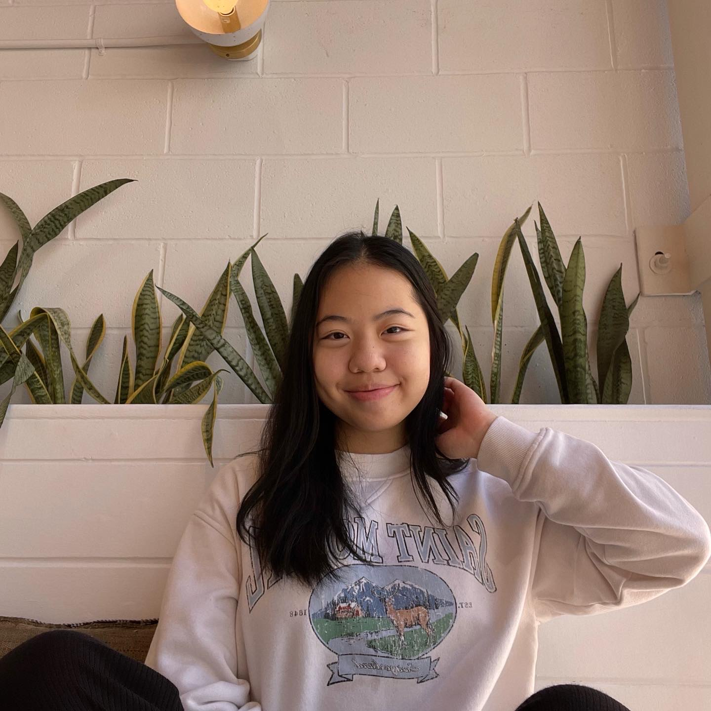
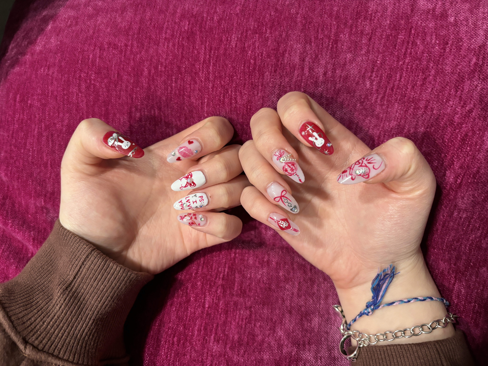

Casey Kung

Relevant links:
LinkedIn |
GitHub |
Personal Website
______________________
About me:
I am originally from Houston, Texas. I am a junior at Texas A&M University, and I am currently pursuing a Computing major.
My interest in computer science began in high school because of a wonderful teacher and her equally wonderful computer science classes.
I am interested in accessibility because:
- I previously had to create a website that met certain accessibility standards.
- It is a useful skill to learn for future career opportunities.
- I want to contribute to a more accessible future. It is not fair for those with disabilities to be left behind when technology is so advanced.
Some of my hobbies include:
- Doing people's nails.
- Playing FPS games.
- Covering songs with friends.

Here is a short overview of my family!
| First Name |
Relationship |
| Chiew |
Mom |
| Ming |
Dad |
| Michelle |
Sister |
| Zoe |
Dog |